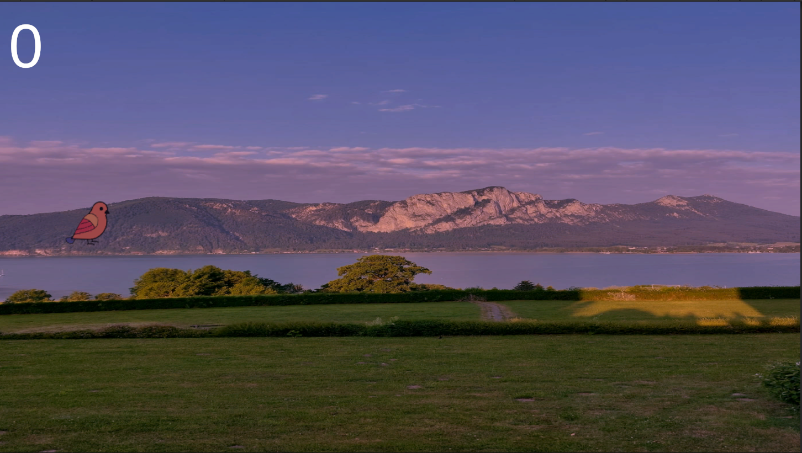

Kalkulačka
První aplikace kalkulačky, do budoucna třeba udělám nějakou mega namakanou v jiném jazyce než python nebo mohu klidně tuhle aktualizovat a stále ji vylepšovat, Knihovna Tkinter
Stáhnout kalkulačku (EXE)

HappyBird
Happy bird hra byla docela pain v pythonu, hry odteď spíše budu programovat v Unity přes C# a kdo ví, třeba zkusím udělat i nějakou originální hru, Knihovna Pygame
Pokud Hru windows považuje za hrozbu, stačí dát u okna Další Informace a na kliknout na tlačítko "přesto spustit".
Music used: Puzzle - RetroVision (NCS Release)
Provided by NCS
Listen: https://youtu.be/TiC1pM8j0YM
Stáhnout HappyBird (EXE)